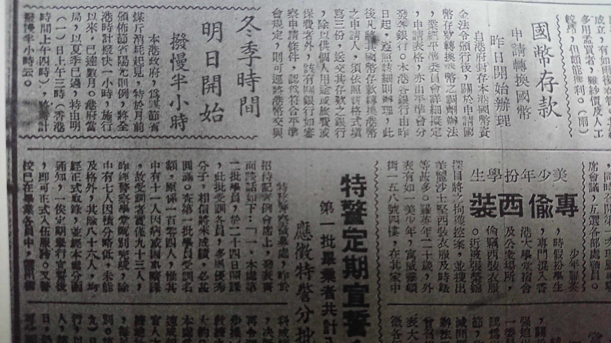

从八十年前的一张报纸说起
在 1941 年 9 月 30 出版的香港《大公报》上，香港政府当局发布了这样一条标题为 「冬季时间明日开始」 的公告：

「本港政府，为谋节省煤斤消耗起见，特于月前颁布节省阳光特例，将全港时计拨快一小时，施行以来，已达数月。港府当局，以夏季已过，特由明（一）日上午三时（香港时间上午四时），将时记拨慢半小时云。」
当时的香港人看到这条报道，第二天起床之后把表调快或调慢半小时就可以了。但这个影响不止在现实世界中起作用，在计算机系统里也生效了。
我们先把系统时区改成香港 Asia/Hong_Kong，然后可以在浏览器里做实验：
// ....特于月前颁布节省阳光特例，将全港时计拨快一小时...
new Date('1941 Jun 15 2:59:59')
// "Sun Jun 15 1941 02:59:59 GMT+0800 (香港标准时间)"
new Date('1941 Jun 15 3:00:00')
// "Sun Jun 15 1941 04:00:00 GMT+0900 (香港标准时间)"
// ....特由明（一）日上午三时（香港时间上午四时），将时记拨慢半小时云 ...
new Date('1941 Oct 1 3:59:00');
// "Wed Oct 01 1941 03:59:00 GMT+0900 (香港标准时间)"
new Date('1941 Oct 1 4:00:00')
// "Wed Oct 01 1941 04:00:00 GMT+0830 (香港标准时间)"那么，80 年前登在地方报纸上的一条时间调整公告，是如何影响到 2020 年时的计算机系统的呢？
计算机中的时间与时区
在计算机中，系统时钟通常从某个时间起点的滴答数记录。例如 Unix 系统，采用从标准世界时 1970 年 1 月 1 日00:00:00 (January 1, 1970, UTC) 开始的秒数作为系统时间。
JavaScript 中的时间记录方式与 Unix 一致，Date 的构造函数接受符合 RFC2822 / IETF 协议的时间字符串，解析并返回具体时间。在该协议中，时区被定义为该区域时间相对于 UTC (旧称 GMT)[注1] 的偏移时间，即 UTC offset。
我们打印一个 Date 对象时，最后跟着的 GMT+0800 就是当前时间相对于 UTC 的偏移量。
值得注意的是，如果传入的时间字符串中不包含时区信息，会以本地时区来解析字符串。所以，当你在系统时区设置为 Asia/Shanghai 时调用 new Date('2020 Feb 05') ，会生成基于 Asia/Shanghai 时区的时间：
new Date('2020 Feb 05')
"Wed Feb 05 2020 00:00:00 GMT+0800 (中国标准时间)"那么计算机是根据什么判断 Asia/Shanghai 对应的 UTC offset 是 GMT+0800 呢？在之前的例子中，为什么在 new Date('1941 Jun 15 2:59:59') 的时候，使用的 UTC 偏移量是 GMT+0800 ，而 new Date('1941 Jun 15 3:00:00') 的时候又使用了 GMT+0900 为UTC 偏移量呢？
时区信息数据库 TZDB
在很多的计算机系统中，使用一个叫做 tz database 的时区信息数据库。这个数据库尝试记录从 1970 年以来各时区和城市的变化，包括夏令时和闰秒。例如 BSD 类操作系统、Python、Java Runtime Enviroment 等等系统和编程语言都使用这套数据库来处理时区信息。时区信息数据库现在由 IANA 基金会进行维护，托管在 https://www.iana.org/time-zones 。
时区信息数据库使用区域/地点的模型来命名时区。例如上文已经出现过的 Asia/Shanghai 即表示亚洲 / 上海时区。TZDB 选择城市而不是国家来标记时区，是因为一个国家政权往往会更替，但一个城市通常很难被完全抹去。
TZDB 中记录了每一个命名时区所对应的时间偏移信息，它们由两部分组成：夏令时规则集与时区过渡信息。
夏令时规则集
其中，夏令时规则集有多条规则组成，每条规则定义了规则的名称、生效时间和生效的 UTC 偏移量。我们来看 TZDB 一个中关于中国的规则集。
# Asia/Shanghai 的 RPC（中华人民共和国）规则集
# 保留字 规则名 开始年 结束年 类型 月 日 时间 更改的偏移量 夏令时标记
# Rule NAME FROM TO TYPE IN ON AT SAVE LETTER/S
Rule PRC 1986 only - May 4 2:00 1:00 D
Rule PRC 1986 1991 - Sep Sun>=11 2:00 0 S
Rule PRC 1987 1991 - Apr Sun>=11 2:00 1:00 D
# ...这里有三条记录：
第一条记录表示这是一条夏令时变更，生效时间是 1986 年当年，从 5 月 4 日 2 点开始，把 UTC 偏移量在当地标准偏移量的基础上额外增加 + 1 小时。
第二条记录表示从这是一条标准时间规则。从 1986 到 1991 年，每年的 9 月 11 日后的第一个周日 2 点后，把 UTC 偏移量调回当地标准偏移量。
第三条记录表示从这是一条夏令时规则。从 1987 到 1991 年，每年的 4 月 11 日后的第一个周日 2 点后，把 UTC 偏移量在当地标准偏移量的基础上额外增加 + 1 小时。
时区过渡信息
时区过渡信息里存放这个区域里规则的更替。这是一条 Asia/Shanghai 的时区过渡信息。
# Asia/Shanghai 的时区过渡信息
# 保留字 时区名字 标准偏移量 夏令时规则 格式 生效截止
# Zone NAME STDOFF RULES FORMAT [UNTIL]
# Beijing time, used throughout China; represented by Shanghai.
Zone Asia/Shanghai 8:05:43 - LMT 1901
8:00 Shang C%sT 1949 May 28
8:00 PRC C%sT这是关于 Asia/Shanghai 的时区过渡信息。可以看到：
- 1901 年以前，Asia/Shanghai 时区的标准 UTC 偏移量是 + 8:05:43。 [注2]
- 1901 年到 1949 年 5 月 28 日，使用命名为 Shang 的规则集合。[注3] UTC 偏移量修正至 +8:00。
- 1949 年 5 月 28 日 至今，使用使用命名为 RPC 的规则集合， UTC 偏移量修正至 +8:00。
TZDB 中的香港相关记录
回到开头的公告，这些记录在 TZDB 的时区过渡信息中有翔实记录：
# Zone NAME STDOFF RULES FORMAT [UNTIL]
Zone Asia/Hong_Kong 7:36:42 - LMT 1904 Oct 30 0:36:42
8:00 - HKT 1941 Jun 15 3:00
8:00 1:00 HKST 1941 Oct 1 4:00
8:00 0:30 HKWT 1941 Dec 25
9:00 - JST 1945 Nov 18 2:00
8:00 HK HK%sT- 1904 年 10 月 30 日 0:36:42 之前，香港的标准 UTC 偏移量是 + 7:36:42。
- 从 1904 年 10 月 30 日 0:36:42 到 1941 年 6 月 5 日 3 点，香港的标准 UTC 偏移量是 +8:00。
- 从 1941 年 6 月 5 日 3 点起，到 1941 年 10 月 1 日 4 点，香港的标准 UTC 偏移量是 +8:00，并附加 +1:00 的夏令时偏移。
- 从 1941 年 10 月 1 日 4 点到 1941 年 12 月 25 日，香港的标准 UTC 偏移量是 +8:00，附加夏令时偏移调整为 +0:30。
- 从 1941 年 12 月 25 日起，到 1945 年 11 月 18 日 2 点，香港的标准 UTC 偏移量是 +9:00。
- 至今，香港的标准 UTC 偏移量是 +8:00。使用名为 HK 的夏令时规则集。
其中，3 和 4，就对应着前文的公告：
本港政府，为谋节省煤斤消耗起见，特于月前颁布节省阳光特例，将全港时计拨快一小时，施行以来，已达数月。港府当局，以夏季已过，特由明（一）日上午三时（香港时间上午四时），将时记拨慢半小时云。
TZDB 与历史
在长长的 TZDB 文件中，除了枯燥的夏令时规则集和时区过渡信息外，维护者还留下了各个规则的信息来源与史料，以及他们获取这些信息来源的过程。
2008 年，一位叫 Lee Yiu Chung 的维护者提出对香港夏令时开始时间的质疑，Phake Nick 和 Paul Eggert 不停的从各种报纸，网站，天文台考证信息。前前后后考证了十年。直至 2018 年，由 Paul Eggert 从香港公共图书馆的微缩胶卷记录中查到了准确的文字信息。确定了 TZDB 中香港现在的时区过渡规则。也就是开头的报纸截图。
另外还会有一些之前根本不知道的信息。例如我国从 1986 年至 1991 年末曾因为需要节约照明用电，所以也采用了夏令时。
注释
- UTC 不完全等同于 GMT。具体可参考 回形针视频：一秒到底有多长。
- + 8:05:43 由 John Milne 在徐家汇天文台测得。
- 1940年代上海「日光节约」运动研究